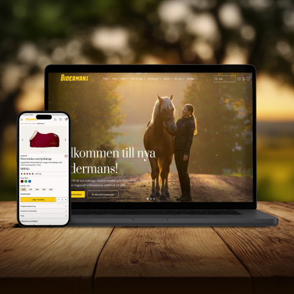
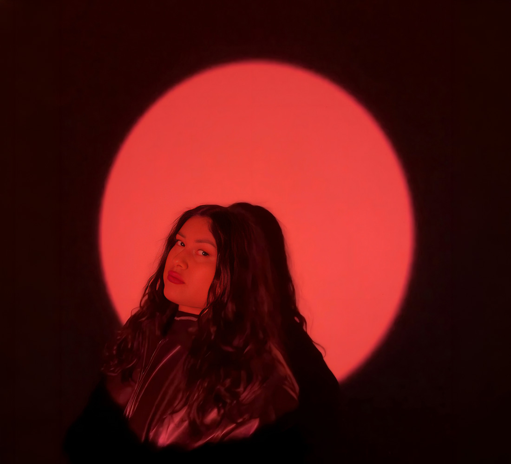
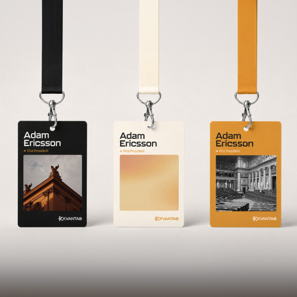
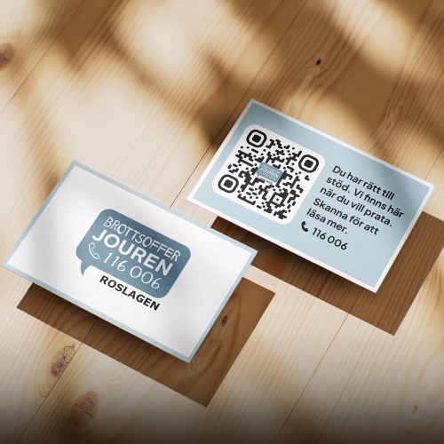
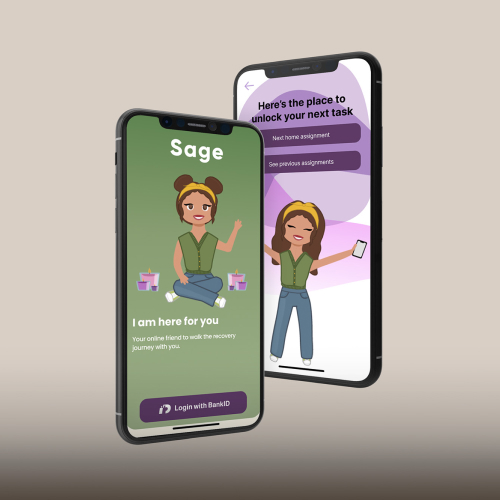
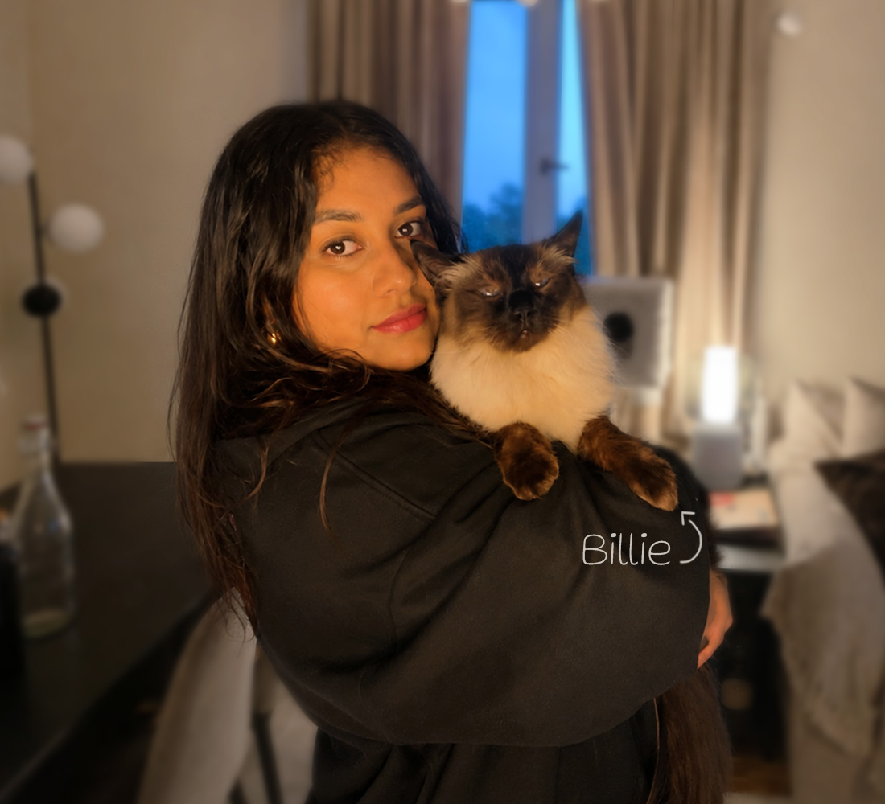

Bidermans | UX/UI
Bidermans is a long-standing equestrian supply business rooted in Sweden’s trotting community. As the designer my task was to create, and bring their visual identity online, creating their first website and webshop.
I'm a multidisciplinary designer focusing on UX/UI, branding, and marketing. I design experiences that feel clear and brands that feel like themselves.
Click button to contact

Selected work across design, experience, and strategy. Click to se more (not now though)

Bidermans is a long-standing equestrian supply business rooted in Sweden’s trotting community. As the designer my task was to create, and bring their visual identity online, creating their first website and webshop.

Kvantab works with political information and public policy, using AI to make complex topics easier to understand. I helped shape a visual identity that felt clear, approachable, and a little more human.

Brottsofferjouren Roslagen offers free, confidential support to crime victims. My task was to help make that support easier to find, focusing on local partnerships and how to reach more people.

Sage is an app concept created for Maria Ungdom, designed to make take-home assignments easier to keep track of. I focused on giving the concept its visual personality and character.
I'm a designer driven by curiosity, empathy, and intuition. Growing up between two cultures shaped how I see the world and how I design
I studied Digital Creative at Hyper Island and am currently studying UX Engineering at Chas Academy, building on my creative background with a stronger focus on how things work in practice. My process is research-led and iterative, balancing strategy with intuitive design.
Outside of work, you'll find me painting, baking, working with clay, or trying a new recipe. I have a deep love for animals, and my cat Billie often sneaks into my more playful projects.
